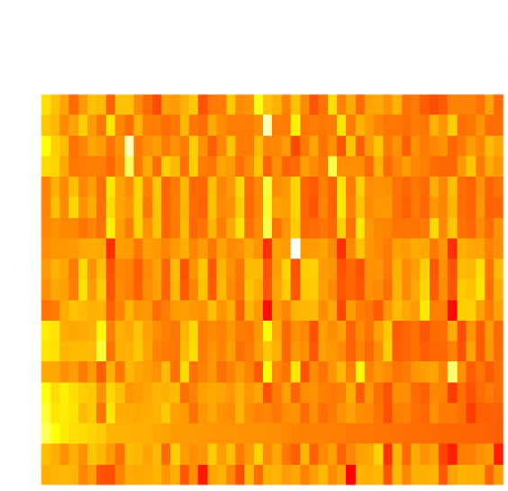
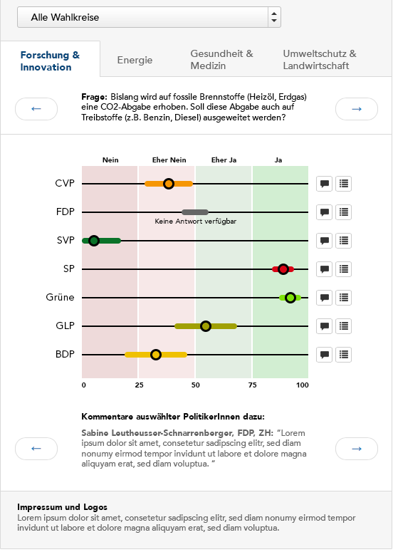

Project 6 - Candidate Profile
General view
There are many different aspects that we could look into in this project. I wish to avoid having another front-end to smarvote candidates data.
We suggest a visualization app consisting of two to three parts (perhaps divided in tabs or seperate):
- Candidates' socio-demographics
- Candidates' issues positions
- Candidates' issues positions in a geographical map (if possible...)
1) Candidates' socio-demographics
Aim
Provide users with the socio-demographic key characteristics of candidates by political party and/or cantons
- Specific characteristics (indicators) of candidates or parties on national level (over all cantons) and on cantonal level
- Indicators: Gender, age, place of residence (urban, rural, ...), level of education, occupation
- Known problems: Data gaps in small cantons, data gaps within candidate data
Indicators to display
- Age
- Gender (? maybe too binary to be visualized along with other indicators)
- Job
- Education
- Residence (based on zip code)
- % foreigners
- % rural (i.e. % of agricultural land)
- % on welfare (?)
- % unemployed (?)
Faceting / grouping
- By political party
- By cantons (or regions /language?)
Notes on indicators
- Level of education (ISCED Probably not necessary to use their categories though)
- Job (ILO, Major groups and sub-major groups? )
- Based on this document. No need to use all their 500 job categories, but maybe only have the "Major groups and sub-major groups" (p.4), i.e. about 50-60 job categories
- Residence data by commune OFS
Dataviz ideas
Heatmap

- Choose socio-demographics indicator (one of: age, education attainement, job, % foreigners where they live, how urban is where they live, ...). It could be the first dropdown and would show as the horizontal dimension of the heatmap. The colour scale of the heatmap would encode the frequency.
- Choose row (show by): Political party or canton. 2nd dropdown, it would correspond to the rows of the heatmap
- Filter: Default: all, by remaining either party or canton (3rd dropdown)
This would allow to visually compare different socio-demographic indicators by cantons and/or by party
- Interactivity: hover over square will show all the corresponding candidate names with the possibility to show basic candidate profile on click
Small multiples distribution
2) Candidates' issue positions
Aim
Present the party positions (average and for specific groups like women, men, age groups, language) on 15-30 of the smartvote questions
- This would look for instance similar to the fig. under. Boxplot visualisation by political party. A dropdown or swiping to show another smartvote question.
- As additional depth/interactivity, if the user click on a party/line, it will show for that party only the positions by gender, age groups and languages on the different lines instead of having different parties.
- Eventually have another dropdown to filter by canton or language.
- Besides picking 15-30 questions that we think are relevant to people. We would need also to mine all the data to pre-select smartvote questions showing the most divergence by gender or age groups or language.

3) Candidates' issue positions in a geographical map
We have ideas about it, but this is maybe already too ambitious?